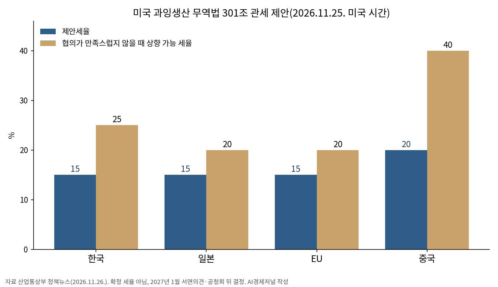
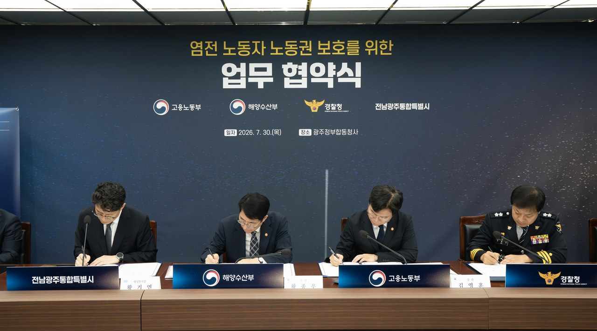

USTR 관세 보고서, 한국 강제노동 위험 지목
한국산 최고 15%, 불만족 땐 25%
국무부, 염전 68곳 점검 결과 미공개 지적
강제노동 301조 관세 7월 시행
AI경제저널=김갑봉 기자 | 미국 무역대표부(USTR)가 25일 한국산 상품에 최고 15% 관세를 매기는 안을 내놨다. 제조업 구조적 과잉생산을 다룬 무역법 301조 조사 결과다. 함께 낸 한국 보고서에는 외국인 노동자의 강제노동 위험이 들어 있다.
국내에서는 25일 염전 765곳 전수조사 결과가 나왔다. 고용노동부·해양수산부 등 관계부처 합동 발표다. 근로감독을 받은 40곳 가운데 23곳에서 노동관계법 위반이 나왔다.
USTR 보고서에 염전은 나오지 않는다. 염전 강제노동은 국무부 2026년 인신매매 보고서와 2025년 CBP 인도보류명령에 나온다.
15% 제안, 협의·약속 불만족 땐 25%
무역법 301조는 외국의 불공정 무역 관행에 대응하는 조항이다. 관세가 대표적인 수단이다. 이번 조사는 3월 11일 시작됐고 대상은 16개 경제권이다. USTR은 이 가운데 14곳의 관행이 불합리하고 미국 상거래에 부담을 주거나 제약한다고 판단했다.
한국 안은 MFN 관세와 기존 301조 관세를 감안한(net of) 최고 15%다. MFN(최혜국대우) 관세는 세계무역기구 회원국 상품에 차별 없이 매기는 기본 관세다. 이번 공고는 15%의 계산 방식을 따로 풀어 쓰지 않았다.
USTR이 협의와 기존 약속을 불만족스럽다고 판단하면 대안으로 최고 25%를 매길 수 있다. 자동차·철강·반도체 등 무역확장법 232조 관세 대상 품목은 이번 안에서 빠졌다.
산업통상부는 이번 세율이 최종 세율이 아닌 제안세율이라고 밝혔다. 산업통상부에 따르면 미국 측은 최종 결정 때 한미 관세합의 결과를 존중하겠다는 뜻을 거듭 확인했다.

USTR 보도자료는 한국의 문제 관행으로 세 가지를 들었다. 첫째는 제조업을 유지·확대하는 산업 계획, 둘째는 국책은행의 우대 대출이다. 셋째는 비시장경제국의 수입·직접투자를 포함한 세계 과잉생산 대응 미흡이다. 특히 자동차·반도체·석유화학을 들었다.
공고에는 한국 정부 의견도 실렸다. 시장경제를 유지하고 있고 구조적 과잉생산에 기여하지 않는다는 내용이다. 두 나라는 5월 27일 협의했다. 공고는 미국의 우려가 풀리지 않았다고 적었다.
2018년 미국 관세, 미국 내 가격에 전부 전가
메리 애미티(Mary Amiti) 등 연구진 세 명은 2018년 미국이 매긴 관세가 미국 내 가격에 미친 효과를 분석했다. 논문은 2019년 『저널 오브 이코노믹 퍼스펙티브스』에 실렸다.
연구진은 관세가 수입품의 미국 내 가격에 모두 전가됐다고 밝혔다. 분석 시점까지 부담은 모두 미국 소비자와 수입업체에 돌아갔다.
USTR 보고서 문제 정책 여섯째, 외국인 노동자 보호 미흡
USTR 한국 보고서 요약은 문제 정책을 여섯 가지로 정리했다. 여섯째 항목은 외국인 노동자를 중심으로 한 노동 보호 미흡이다. 이 항목에는 「비용을 인위적으로 낮춰 제조업 투자와 생산 확대를 떠받치는」이라는 말이 붙었다.
보고서 106쪽 절 제목은 「외국인 노동자의 강제노동 위험」이다. 한국 외국인 노동자가 강제노동 위험에 더 크게 노출돼 있다고 썼다. 근거로 든 수치는 2025년 취업 외국인 노동자 약 100만명이다.
이 가운데 46% 가까이가 제조업·광업에서 일한다. 비전문 취업 비자로 한정하면 이 비율은 80.5%라고 적었다. 이주노동자 60% 이상이 1000만~2000만원의 브로커 수수료를 냈다는 조사도 인용했다.
국무부 보고서의 염전, 정부 점검 68곳 결과 미공개
미국 국무부 2026년 인신매매 보고서는 한국을 가장 높은 1등급으로 유지했다. 인신매매 근절 최소 기준을 모두 충족한다는 판정이다.
같은 보고서는 신체·지적 장애가 있는 일부 한국인 남성이 어선과 양식장·염전·축사에서 강제노동을 당한다고 적었다. 해수부·고용노동부·지자체가 염전 68곳을 점검했다. 보고 기간에 결과는 공개하지 않았다고 했다.
고용노동부가 조사한 강제노동 사건 89건 가운데 87건은 법 위반 없음으로 종결됐다. 정부가 강제노동으로 유죄 판결을 받게 한 인신매매범은 4명이라고 보고서는 밝혔다.
태평염전 천일염, 2025년 4월 미국 통관 보류
미국 관세국경보호청(CBP)은 2025년 4월 2일 태평염전 천일염에 인도보류명령을 내려 통관을 막았다. CBP가 든 근거 조항은 미국 연방법 19 U.S.C. § 1307이다.
해수부는 같은 해 4월 7일 이 명령을 설명했다. 외국 정부가 강제노동을 이유로 국내 기업 제품 수입을 막은 첫 사례라는 내용이다. 당시 미국에 수출되던 태평염전 천일염은 모두 강제노동과 무관하다고 밝혔다.
공익법센터 어필 등 세 단체는 같은 날 논평에서 명령을 환영했다. 단체들은 CBP가 신분증 압수, 임금 유보, 채무 속박 등을 발견했다고 전했다. 한국도 강제노동 상품 수입금지 입법에 나서라고 요구했다.
강제노동 301조, MFN 12.5% 미만 품목 합산 12.5%
한국산 상품에는 이미 다른 301조 관세가 붙는다. USTR이 7월 23일(미국 시간) 확정한 강제노동 301조 조치다. 7월 24일 0시 1분(미국 동부시간)부터 시행됐다.
USTR은 한국이 강제노동 생산품 수입금지를 도입하지도, 실효적으로 집행하지도 않았다고 판단했다. 이 조치의 USTR 보고서 본문에도 염전과 태평염전은 나오지 않는다.
7월 강제노동 301조 조치도 「net of MFN」이라는 표현을 썼다. 11월 한국 안과 달리 계산 방식을 적었다. 7월 28일 연방관보 공고는 MFN 관세가 12.5% 미만이면 두 관세의 합을 12.5%로, 12.5% 이상이면 301조 관세를 0%로 정했다.
산업통상부는 7월 24일 방미 면담 결과를 밝혔다. 김정관 산업통상부 장관과 여한구 통상교섭본부장이 미국 측을 만났다. 한국 측은 강제노동·과잉생산 두 301조 관세를 합쳐 15%를 넘으면 안 된다고 강조했다.
염전 전수조사와 국회 개정안
25일 발표에서 확인된 임금체불·최저임금 위반은 5곳 5000만원이다. 4700만원은 즉시 청산됐고 시정에 응하지 않은 사업주 1명이 형사 입건됐다. 정부는 내년부터 소금 생산 초기에 고용 실태를 조사할 계획이다.

국회에는 소금산업 진흥법 개정안(의안번호 2219969)이 계류 중이다. 서삼석 의원 등 14명이 7월 15일 냈다. 8월 31일 농림축산식품해양수산위원회 소위원회로 넘어갔다.
개정안은 근로기준법 제7조(강제근로 금지)·제8조(폭행 금지)나 선원법 제25조의2를 어겨 벌금 이상 형이 확정된 경우를 다룬다. 이때 소금제조업 허가를 취소하고 지원자금을 환수할 수 있게 했다.
개정안은 제안이유에서 염전 노동자 인권 침해가 일어나도 허가 취소나 지원금 환수 사례가 없다고 밝혔다.
USTR은 내년 1월 5일까지 서면의견을 받고 1월 25일 공청회를 연다. 산업통상부는 최종 세율이 그 뒤 확정될 것으로 내다봤다.
참고문헌
- Office of the United States Trade Representative, "USTR Makes Determinations and Proposes Actions in 14 Section 301 Investigations Relating to Structural Excess Capacity and Production in Manufacturing Sectors", 2026.11.25., https://ustr.gov/about/policy-offices/press-office/press-releases/2026/november/ustr-makes-determinations-and-proposes-actions-14-section-301-investigations-relating-structural
- Office of the United States Trade Representative, "Notice of Determination and Request for Comments Concerning Proposed Action in the Section 301 Investigation of Acts, Policies, and Practices of Korea Relating to Structural Excess Capacity and Production in Manufacturing Sectors", 2026.11., https://ustr.gov/sites/default/files/files/Press/Releases/2026/Korea%20FRN.pdf
- Office of the United States Trade Representative, "Acts, Policies, and Practices of Korea Relating to Structural Excess Capacity and Production in Manufacturing Sectors"(보고서), 2026.11., https://ustr.gov/sites/default/files/files/Press/Releases/2026/301%20SECP%20Korea%20Report%2011.25.2026.pdf
- U.S. Department of State, "2026 Trafficking in Persons Report: South Korea", https://www.state.gov/reports/2026-trafficking-in-persons-report/south-korea
- Office of the United States Trade Representative, "Report in Section 301 Investigations of the Acts, Policies, and Practices of Various Economies Related to the Failure to Impose and Effectively Enforce a Prohibition on the Importation of Goods Produced with Forced Labor", 2026.06., https://ustr.gov/sites/default/files/files/Press/Releases/2026/USTR%20Report%20Sec%20301%20FL%20301%206-2-26%20FINAL%20for%20upload.pdf
- 산업통상부 미주통상과, "미 USTR, 한국에 15% 관세 부과안 제안…내년에 최종 확정", 정책브리핑 정책뉴스, 2026.11.26., https://www.korea.kr/news/policyNewsView.do?newsId=148976582
- 산업통상부 미주통상과, "미 '강제노동 301조 관세' 최종 발표…한국·일본 등 12.5%", 정책브리핑 정책뉴스, 2026.07.24., https://www.korea.kr/news/policyNewsView.do?newsId=148968735
- Office of the United States Trade Representative, "Notice of Actions in Section 301 Investigations of Acts, Policies, and Practices of Various Economies Related to the Failure of Each Economy To Impose and Effectively Enforce a Prohibition on the Importation of Goods Produced With Forced Labor", Federal Register 2026-15181, 2026.07.28., https://www.federalregister.gov/documents/2026/07/28/2026-15181/notice-of-actions-in-section-301-investigations-of-acts-policies-and-practices-of-various-economies
- U.S. Customs and Border Protection, "Withhold Release Order (WRO) on Taepyung Salt Farm's Sea Salt Products"(CSMS # 64637741), 2025.04.04., https://content.govdelivery.com/accounts/USDHSCBP/bulletins/3da4b2d
- 해양수산부, "해수부 '美 천일염 수입금지 조치 해제, 신속히 추진'", 정책브리핑 사실은 이렇습니다, 2025.04.07., https://www.korea.kr/briefing/actuallyView.do?newsId=148941408
- 공익법센터 어필·장애우권익문제연구소·법무법인 원곡, "[논평] 한국산 천일염이 강제노동으로 생산되었다는 것을 인정한 미 관세국경보호청의 결정을 환영한다", 2025.04.07., https://apil.or.kr/press-releases/704757512
- 고용노동부 근로감독기획과·해양수산부 어업인안전기획과 등 관계부처 합동, "염전 노동자 고용 실태 합동 전수 조사 및 노동법 위반 의심 염전 근로 감독 실시", 2026.11.25., https://www.korea.kr/briefing/pressReleaseView.do?newsId=156790687
- 국회 의안정보시스템, 「소금산업 진흥법 일부개정법률안(서삼석의원 등 14인)」 의안번호 2219969, 2026.07.15. 제안, https://likms.assembly.go.kr/bill/ (의안번호로 검색)
- Amiti, M., Redding, S. J., Weinstein, D. E., 「The Impact of the 2018 Tariffs on Prices and Welfare」, 『Journal of Economic Perspectives』 33권 4호, American Economic Association, 2019, 187~210쪽, https://doi.org/10.1257/jep.33.4.187
[사진 출처]
- [사진 1] 해양수산부 사진뉴스 「해양수산부·고용노동부·경찰청·전남광주통합시, 염전노동자 노동권 보호를 위한 업무협약(MOU) 체결」(2026.07.31.), https://www.mof.go.kr/doc/ko/selectDoc.do?docSeq=67727&menuSeq=381&bbsSeq=15
※ 이 기사는 AI 프로그램 클로드를 활용해 작성했습니다.
관련기사
- 염전 765곳 전수조사, 23곳 노동법 위반·체불 5000만원
- [트럼프 관세전쟁⑥] 조선 카드로 얻은 15%, 대법원 판결 뒤 301조 12.5%로 다시 짜였다
- [트럼프 관세전쟁⑧] 관세는 미국 안에서 냈다, 수입업체와 소비자가 진 부담 90%
- [한국경제 민낯③] 관세와 수출통제 — 무역전쟁의 청구서는 협력업체와 일하는 사람에게 온다
저작권자 © AI경제저널 무단전재 및 재배포, AI학습 및 활용 금지